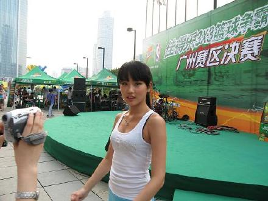
深圳火车站...我第一次到深圳...哪里都没有逛就要走了5555555
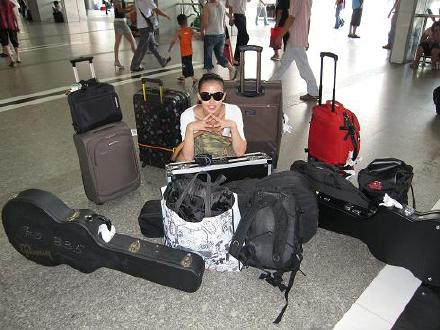
大家都去买票了...留我下来看行李...
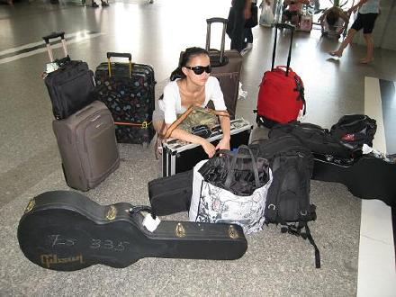
兰色花园吉他手-张蔚....也教我吉他...平时我喜欢叫他老师...我们都是水瓶座的...蛙哈哈哈哈
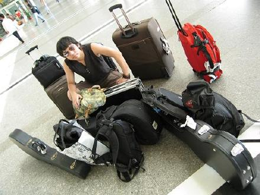
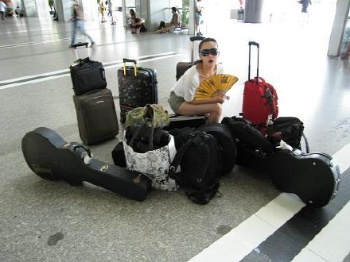
兰色花园BASS-陈7....哈.........和我抢镜....
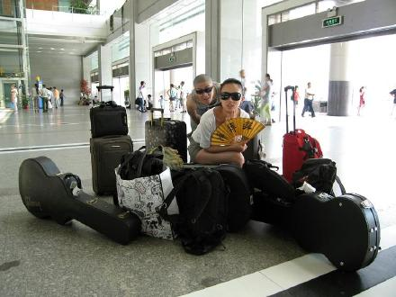
最瘦的男人....兰色花园鼓手-曹轶
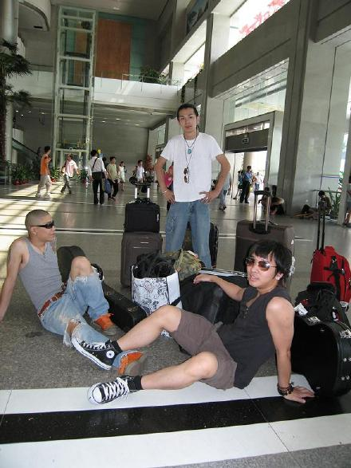
兰色花园的主唱"陆兰",主唱这次没空.所以我们暂时叫"黄色花园"哈哈哈哈
黄色花园从深圳出发去广州干活....哈哈哈哈哈哈
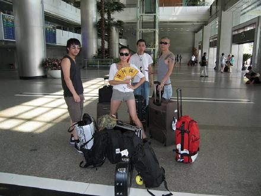
我们到了广州正佳广场...午饭是在正佳广场二楼的拉丁餐厅吃的...味道还不错...这个盒子居然是放纸巾的.......
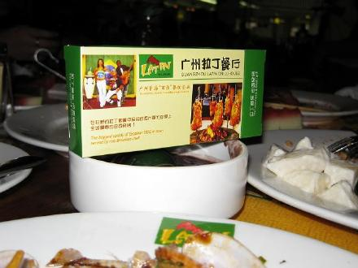
要开始了....抢在主持人上场之前...先独占舞台摆个POSS
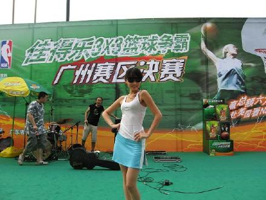
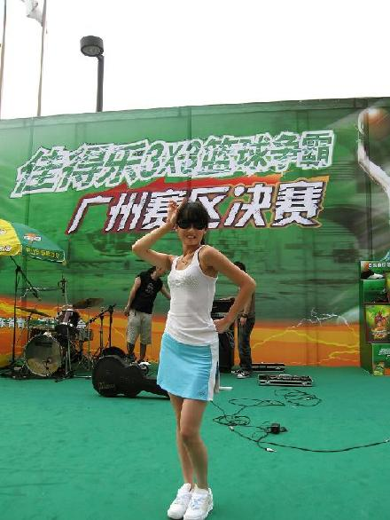
长发魔女正在采访我......我有点紧张....
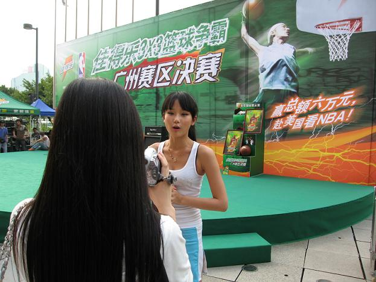
我们的BASS喜欢带着HIGH镜上台
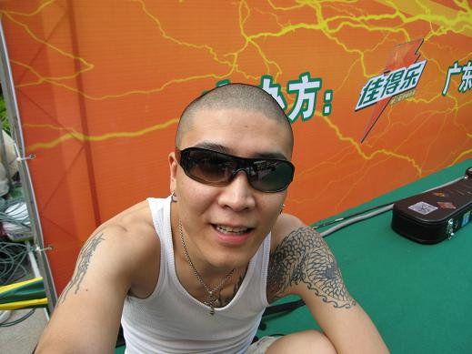
我也不知道他们两个怎么这个表情....
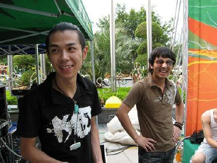
HIGH歌的步伐...
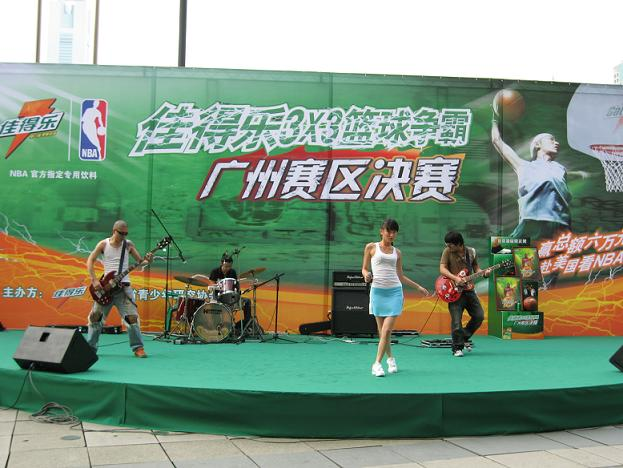
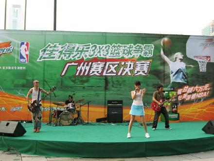
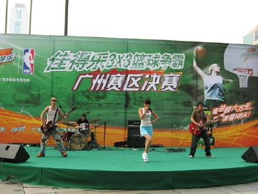
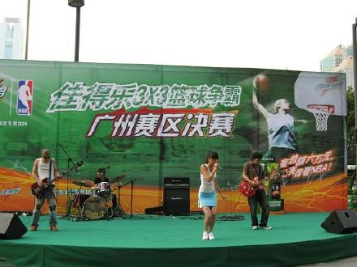
终于亲眼见到笔息拉...哈...他就是一直以来很很很支持我的笔息...也是我的贴吧吧主...好开心你能来看我的演出...好像你年龄和我差不错大哦...今天你是一个过来的吗?不知道你住的是不是很远,是不是过来很麻烦呢..那么热的天...我好感动的...可是没太多时间和你讲很多话,因为我在广州的通告排的很紧..所以一演完就离开了...不管怎样...真的很谢谢你来看我...站在舞台上唱歌的时候...看到台下好多人...但我一眼就认出他就是"笔息"哈...可能就是感觉吧...
笔息给我的第一眼感觉很舒服...乖乖地,小帅男孩....哈...不知道到底是怎样的....???
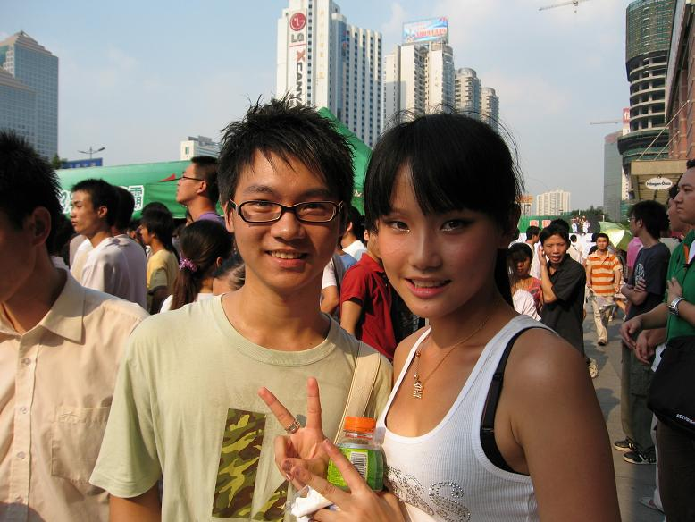